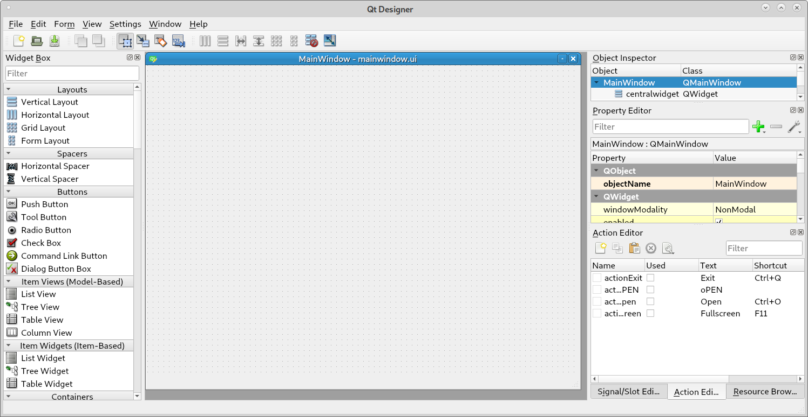
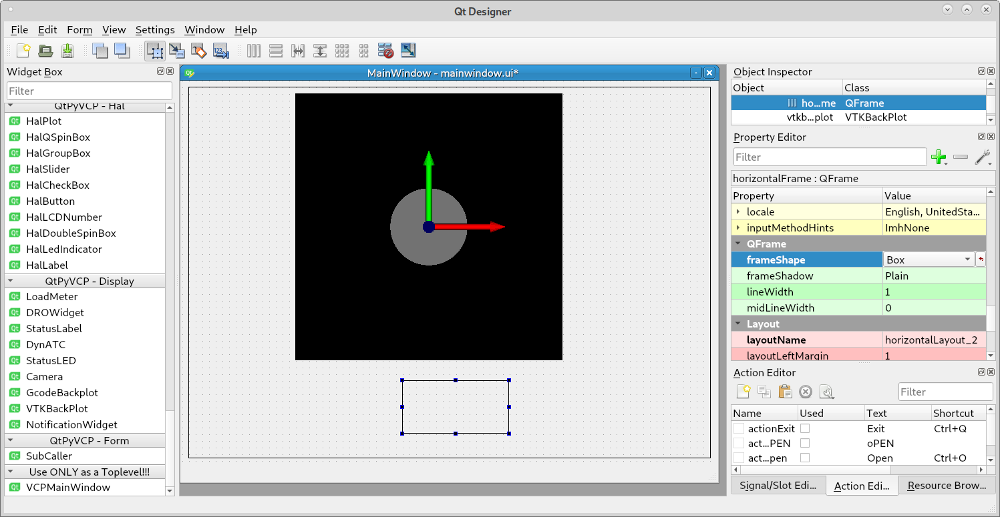
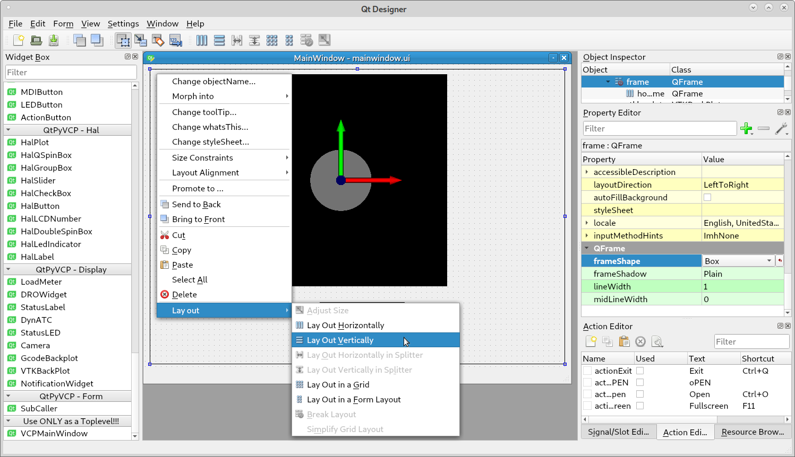
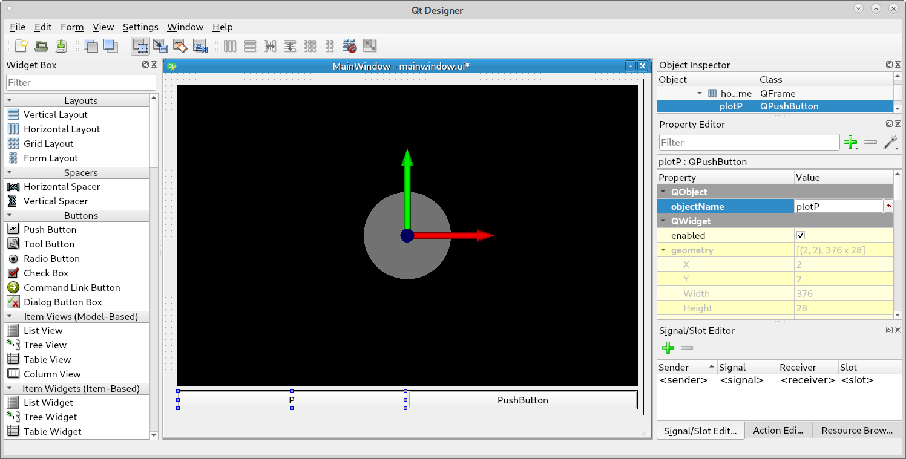
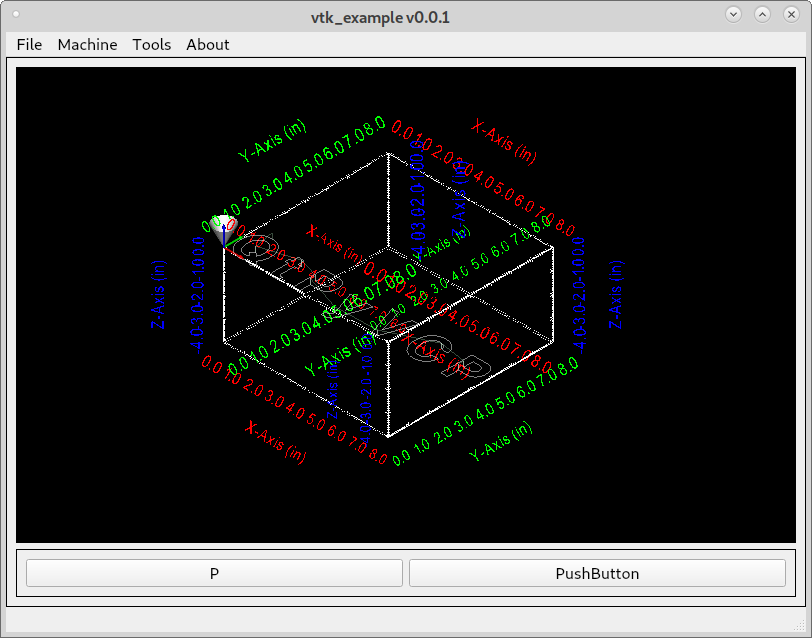
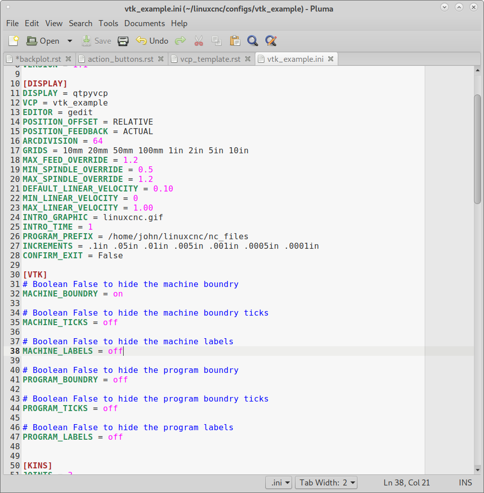
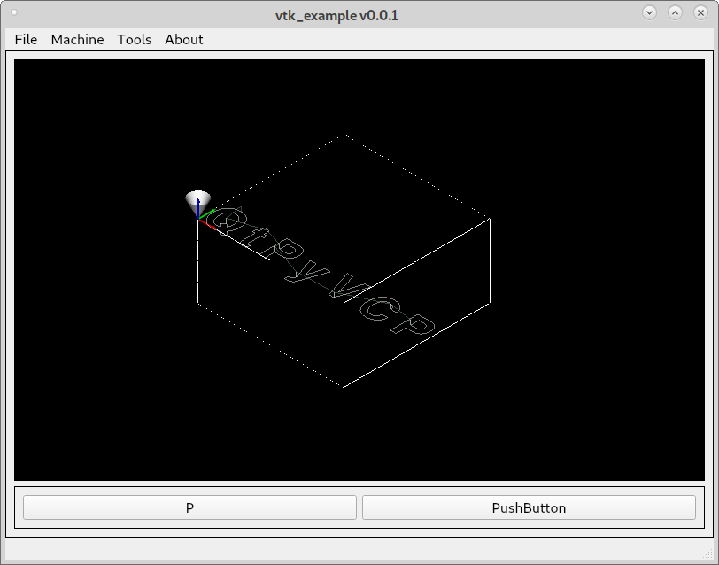
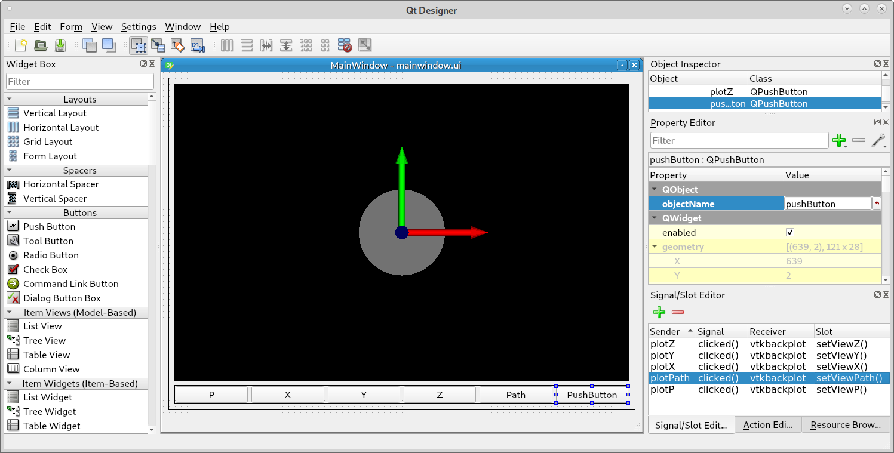
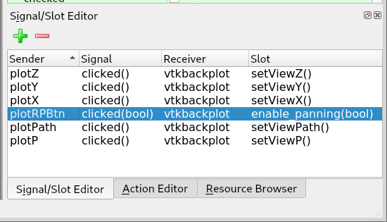
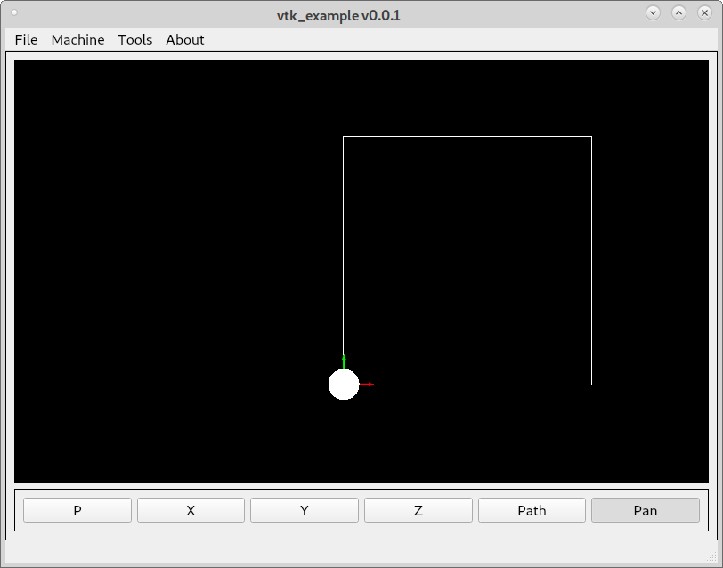

VTK Backplot
The VTK Backplot is a very fast plot renderer and is the recommended one to use.
This example is using the VCP Template to create a blank screen.
Add a Frame and select frameShape Box then drag another Frame inside the first one and select frameShape Box and drag a VTKBackPlot into the first frame and save your work.
Drag a couple of Push Buttons into the second frame. Right click inside the first frame and select Lay Out Vertically.
Double click on the first button and change the name to P, next change the objectName to plotP. In the Signal/Slot Editor tab left click on the green plus symbol to create a new Signal/Slot.
Set the sender to plotP, set the Signal to clicked(), set the Receiver to vtkbackplot and set the Slot to setViewP(). Now when we run the example the first button will set the view to Isometric Projection.
Controlling the display of the boundries and axes information can be done in the configuration ini file located in username/linuxcnc/configs/configuration_name. Descriptions of the options for the ini file are in INI Options.
Turning off everything except machine boundry in the ini file.
And the result.
In the same mannor as before we can drag more buttons into the frame and set the views for X, Y, Z and Path.
Touch screens only have the left mouse button and the default action for the left mouse button is to roll the disply. In order to pan the display we need to add a button for Pan/Roll. Make sure to check off checkable so the function will work.
The big difference with this buttons signal is it must be clicked(bool) for the enable_panning slot to show up.
To change the text of the button to reflect the current status we need to do a bit of python. Open the username/configuration_name/configuration_name/mainwindow.py file. Add the connect line to tie the clicked action to the function. Then add the toggleRollPan function.
class MyMainWindow(VCPMainWindow):
"""Main window class for the VCP."""
def __init__(self, *args, **kwargs):
super(MyMainWindow, self).__init__(*args, **kwargs)
self.plotRPBtn.clicked.connect(self.toggleRollPan)
def toggleRollPan(self):
if self.plotRPBtn.isChecked():
self.plotRPBtn.setText('Pan')
else:
self.plotRPBtn.setText('Roll')
Add a new signal with the sender plotRPBtn, signal clicked(bool), receiver vtkbqackplot, slot enable_panning(bool).
When we run the example and click or press the Roll button it toggles to the Pan function and using a touch screen you can now pan the backplot.
